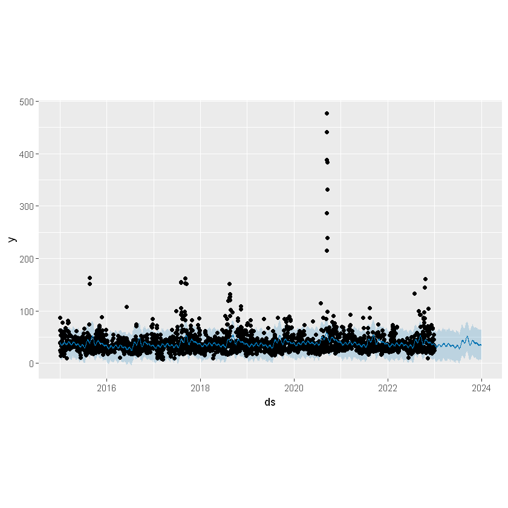
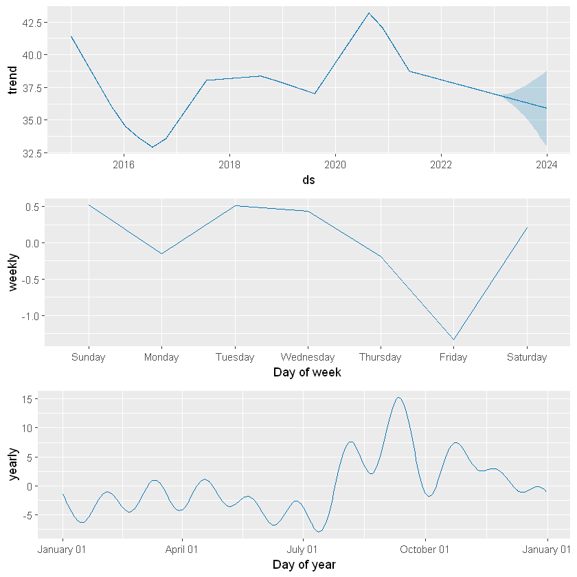
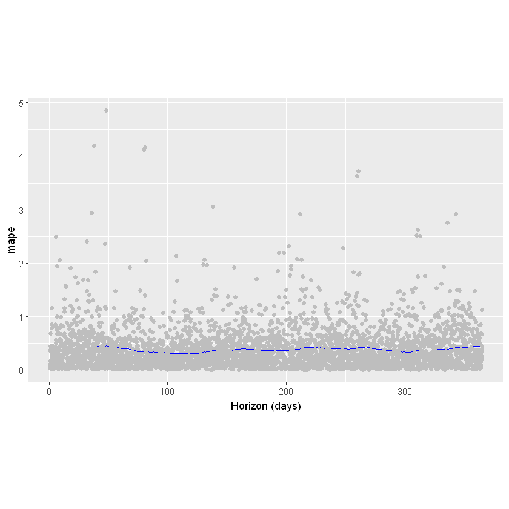

library(dbplyr)
library(tidyverse)
library(lubridate)
library(IRkernel)
library(prophet)
#library(DBI)
#library(RPostgres)
library(rpivotTable)Result Prophet & Hypothesis Testing
Portland Vs Other Metro Areas AQI
To gain an understanding of how Portland’s AQI differs from other large cities, we can run a hypothesis test to determine the significance.
large_metro_data = read.csv('https://raw.githubusercontent.com/wu-msds-capstones/Air-Quality-Index/main/data/metro_1mil.csv')
portland_data = large_metro_data %>%
filter(city == 'Portland' & state == 'Oregon')Initially we can run a two sample t-test to show that Portland’s AQI average is statistically greater than the average AQI of all large metropolitan areas within the US. We compare the sample of Portland AQI datapoints in the time period with the sample of all metropolitan areas with greater than one million population.
Null Hypothesis: The Portland AQI is greater than or equal to the AQI of all large metro cities in the US. Alternate Hypothesis: The Portland AQI is less than the AQI of all large metro cities in the US.
t.test(portland_data$aqi, large_metro_data$aqi, alternative = "less", var.equal = FALSE)
Welch Two Sample t-test
data: portland_data$aqi and large_metro_data$aqi
t = -24.604, df = 3038.7, p-value < 2.2e-16
alternative hypothesis: true difference in means is less than 0
95 percent confidence interval:
-Inf -9.912464
sample estimates:
mean of x mean of y
37.87269 48.49553 Based on the low P-value of < 2.2*10^-16, we can safely reject the null hypothesis. We conclude that Portland’s AQI mean is not greater than or equal to the AQI of all large metropolitan areas. This agrees with our initial observations on the greater AQI outcomes of Portland, and specifies the significance of this statistically.
September 2020 Wildfires
From the initial EDA, we can see a large spike in AQI during September of 2020. During this month, the most destructive wildfire in Oregon history ravaged the state. The fires burned more than one million acres of land, destroying thousands of homes, and killing 11 people. 500,000 Oregonians were on evacuation alert, and 40,000 were actually forced to leave (Oregon Department of Emergency Management). Anyone around during that time will recall the orange skies, thick atmosphere, and strong smoke smell, but how unusual actually was this period?

To understand, we will conduct a t-test to see whether or not this month had greater than usual AQI.
Null Hypothesis: September 2020 AQI less than or equal to AQI of entire period in Portland Alternate Hypothesis: September 2020 AQI greater AQI of entire period in Portland
pdx_data = large_metro_data %>%
filter(
city == "Portland"
) %>%
select(date, aqi)
pdx_data$month = month(pdx_data$date, label = TRUE)
pdx_data$year = year(pdx_data$date)
pdx_09_2020 = pdx_data %>%
filter(month=="Sep" & year=="2020")
t.test(pdx_09_2020$aqi, pdx_data$aqi, alternative = "greater", var.equal = FALSE)
Welch Two Sample t-test
data: pdx_09_2020$aqi and pdx_data$aqi
t = 3.1995, df = 29.015, p-value = 0.001661
alternative hypothesis: true difference in means is greater than 0
95 percent confidence interval:
39.7636 Inf
sample estimates:
mean of x mean of y
122.66667 37.87269 Based on the low pvalue of 1.661*10^-3, we reject the null. We conclude that the September AQI in Portland is not less than or equal to the AQI for the entire period. The wildfire had a significant effect on the air quality, making it much more difficult to breathe. This aligns with the observation of the large spike during this period. We must do more to address and combat the wildfires that not only harm the air we breathe, but cause long lasting damage to the local environment.
Portland Transit System
One hypothesis for Portland’s better air quality outcomes is due to the increased focus on public transportation. Portland has placed high emphasis on utilizing public transit, with rates comparable to larger cities and higher than most other cities of its size. We will run a proportion statistical test to see how Portland’s rate of ridership compares with other cites.
We have standardized rates by passenger miles ridden per person. This allows us to properly compare cities with different population sizes.
Null Hypothesis: Transit ridership in Portland is less than or equal to transit ridership across the country (large metro areas only) Alternate Hypothesis: Transit ridership in Portland is greater than transit ridership across the country (large metro areas only)
pdx_transit = large_metro_data %>%
filter(
city == "Portland"
) %>%
select(city, population, num_busses, operating_miles, passenger_miles)
pdx_transit = unique(pdx_transit)
pdx_transit$pass_miles_per_person = pdx_transit$passenger_miles/pdx_transit$population
large_metro_transit = large_metro_data %>%
select(city, population, num_busses, operating_miles, passenger_miles)
large_metro_transit = drop_na(unique(large_metro_transit))
large_metro_transit$pass_miles_per_person = large_metro_transit$passenger_miles/large_metro_transit$population
large_metro_transit_avg = large_metro_transit %>%
group_by(city) %>%
summarize(avg_pass_miles = mean(passenger_miles),
avg_pass_miles_per_person = mean(pass_miles_per_person))
t.test(pdx_transit$pass_miles_per_person, large_metro_transit_avg$avg_pass_miles_per_person, alternative = 'greater', var.equal = FALSE)
Welch Two Sample t-test
data: pdx_transit$pass_miles_per_person and large_metro_transit_avg$avg_pass_miles_per_person
t = 2.1653, df = 12.096, p-value = 0.02553
alternative hypothesis: true difference in means is greater than 0
95 percent confidence interval:
5.834119 Inf
sample estimates:
mean of x mean of y
95.90601 63.02489 Based on the low p value of .02553, we reject the null. Portland transit ridership is not less than or equal to the average transit ridership of large metro areas across the country. Portland’s higher transit numbers could be an influence in the better air outcomes of the city. However, because transit ridership is better in some other cites such as Baltimore and New York but not reflected in their AQI outcomes, this leads us to believe that transit ridership does not have sole influence in the air quality.
Prophet AQI Trend Visualization and Forecasting
Prophet by Meta is used as time series prediction to estimate and map trends based on out data. We use this to see how AQI trends vary by day, month, and year. It is also able to give us a forecast for a given period after the end of our data which we can analyze and use to anticipate future AQI values.
Initially, we connected the R instance to the PostgreSQL database and pulled information directly using dbConnece and RPostgres. For this report, we simply call our information from a local csv.
# con <- dbConnect(RPostgres::Postgres(),
# dbname = 'air',
# host = 'localhost',
# port = 5432,
# user = 'postgres',
# password = 'postgres')
metro_1mil = read.csv('https://raw.githubusercontent.com/wu-msds-capstones/Air-Quality-Index/main/data/metro_1mil.csv')
#Portland Only
# portland <- tbl(con, sql("SELECT * FROM air.air_quality
# LEFT JOIN air.dates USING (date_id)
# LEFT JOIN air.locations USING (location_id)
# LEFT JOIN air.aqi_categories USING (category_id)
# LEFT JOIN air.yearly_transit USING (yearly_transit_id)
# WHERE city = 'Portland' AND
# state = 'Oregon'
# ORDER BY date"))
portland_data = metro_1mil %>%
filter(city == 'Portland' & state == 'Oregon')
#portland_data <- as.data.frame(portland)Data Forecasting
To use the package, data must be in the format of a two column graph, with the first column being the date data, and the second being the variable being mapped and preddicted. In this case, we will be predicting AQI.
pdx = portland_data %>%
select(c(date, aqi)) %>%
rename(
ds = date,
y = aqi
)
head(pdx)| ds | y | |
|---|---|---|
| <chr> | <int> | |
| 1 | 2019-06-25 | 29 |
| 2 | 2019-06-26 | 31 |
| 3 | 2019-06-27 | 19 |
| 4 | 2019-06-28 | 32 |
| 5 | 2019-06-29 | 34 |
| 6 | 2019-06-30 | 41 |
We begin the prophet forecast by transforming the dataframe into the prophet object.
pdxprophet = prophet(pdx) The future data is created with the make_future_dataframe function. Here we want one year of additional data to be forcasted.
future <- make_future_dataframe(pdxprophet, periods = 365)
tail(future)| ds | |
|---|---|
| <dttm> | |
| 3282 | 2023-12-26 |
| 3283 | 2023-12-27 |
| 3284 | 2023-12-28 |
| 3285 | 2023-12-29 |
| 3286 | 2023-12-30 |
| 3287 | 2023-12-31 |
We predict future values based on the existing data and the future period. This will return the actual data and predictions, with an error range shown with the upper and lower bounds.
forecast <- predict(pdxprophet, future)
tail(forecast[c('ds', 'yhat', 'yhat_lower', 'yhat_upper')])| ds | yhat | yhat_lower | yhat_upper | |
|---|---|---|---|---|
| <dttm> | <dbl> | <dbl> | <dbl> | |
| 3282 | 2023-12-26 | 36.31957 | 6.630385 | 63.52205 |
| 3283 | 2023-12-27 | 36.19091 | 7.774048 | 65.34996 |
| 3284 | 2023-12-28 | 35.45571 | 6.510771 | 63.37387 |
| 3285 | 2023-12-29 | 34.15332 | 4.637481 | 64.76921 |
| 3286 | 2023-12-30 | 35.47973 | 5.749367 | 65.30744 |
| 3287 | 2023-12-31 | 35.52047 | 7.225826 | 64.01754 |
To visualize this we can plot it. The black dots represent the actual values. The dark blue line represents the prediction made by the algorithm. The light blue transparent area represents the upper and lower bounds of the prediction. Right away, we can see the yearly increase in aqi every year during the late summer. The large spike in 2020 will be something to take a closer look at. This corresponds with the large forest fire in the Columbia Gorge. At the end, we can see forcasted data for the year 2023.
plot(pdxprophet, forecast)
We can also see specific trends including the total (entire eight years), weekly, and yearly trends. This allows us to see how aqi goes up and down fairly consistantly based on the time of year, though the day of the week tends to have very little impact (it may look significant but it is only moving up and down less than 1.5 aqi between days). This allows us to see the consistant increase during the late summer to mid fall each year.
prophet_plot_components(pdxprophet, forecast)
Cross Validation
We can cross validate the predictions to see how accurate they turned out to be. This will predict over the period from the cutoff date up to specified date in the ds column date. The forecast is made for each point between cutoff and cutoff + horizon. We have specified only to predict up to a year out as that is the amount of time we forcasted in the initial Portland forcast above. We can then compute the difference between y and yhat to see how accurate the prediction is.
pdx_cv <- cross_validation(pdxprophet, initial = 730, period = 180, horizon = 365, units = 'days')
head(pdx_cv)| y | ds | yhat | yhat_lower | yhat_upper | cutoff | |
|---|---|---|---|---|---|---|
| <dbl> | <dttm> | <dbl> | <dbl> | <dbl> | <dttm> | |
| 1 | 25 | 2017-01-27 | 34.25423 | 18.88028 | 49.62760 | 2017-01-26 |
| 2 | 17 | 2017-01-28 | 36.59664 | 20.35013 | 52.93966 | 2017-01-26 |
| 3 | 49 | 2017-01-29 | 35.96572 | 20.78046 | 50.92849 | 2017-01-26 |
| 4 | 53 | 2017-01-30 | 33.80520 | 18.30769 | 51.33331 | 2017-01-26 |
| 5 | 41 | 2017-01-31 | 34.08924 | 19.94112 | 52.34561 | 2017-01-26 |
| 6 | 10 | 2017-02-01 | 34.98429 | 20.41685 | 51.40722 | 2017-01-26 |
This chart shows the mean squared error (MSE), root mean squared error (RMSE), mean absolute error (MAE), mean absolute percent error (MAPE), median absolute percent error (MDAPE) and coverage of the yhat_lower and yhat_upper estimates. As the horizon increases, the errors tend to increase, but overall they are not too large.
pdx_perf <- performance_metrics(pdx_cv)
head(pdx_perf)| horizon | mse | rmse | mae | mape | mdape | smape | coverage | |
|---|---|---|---|---|---|---|---|---|
| <drtn> | <dbl> | <dbl> | <dbl> | <dbl> | <dbl> | <dbl> | <dbl> | |
| 1 | 37 days | 477.8973 | 21.86086 | 14.72203 | 0.4161539 | 0.3127868 | 0.3530235 | 0.7780549 |
| 2 | 38 days | 485.7761 | 22.04033 | 14.94405 | 0.4268476 | 0.3170282 | 0.3579551 | 0.7719338 |
| 3 | 39 days | 494.1912 | 22.23041 | 15.07162 | 0.4284520 | 0.3204344 | 0.3591622 | 0.7669463 |
| 4 | 40 days | 503.6057 | 22.44116 | 15.29299 | 0.4331915 | 0.3284341 | 0.3633180 | 0.7594650 |
| 5 | 41 days | 515.0069 | 22.69376 | 15.48735 | 0.4369072 | 0.3301875 | 0.3667491 | 0.7531172 |
| 6 | 42 days | 556.9106 | 23.59895 | 15.78155 | 0.4375043 | 0.3301875 | 0.3690468 | 0.7510769 |
We can plot each of these metrics to see how accurate the predictions are over the estimated period. The light grey datapoints represent the mean absolute percent error. A datapoint with a x value 200 and y value 1 means it was predicted for a period of 200 days after the cutoff date, and was 1% off the actual value. We can see that most predictions are under 1%, making this a pretty decent estimation. The fact that they do not increase over time allows us to have a certain degree of confidence in the prediction even a year out. The blue line shows the mean of these datapoints.
#mean absolute percent error
plot_cross_validation_metric(pdx_cv, metric = 'mape')